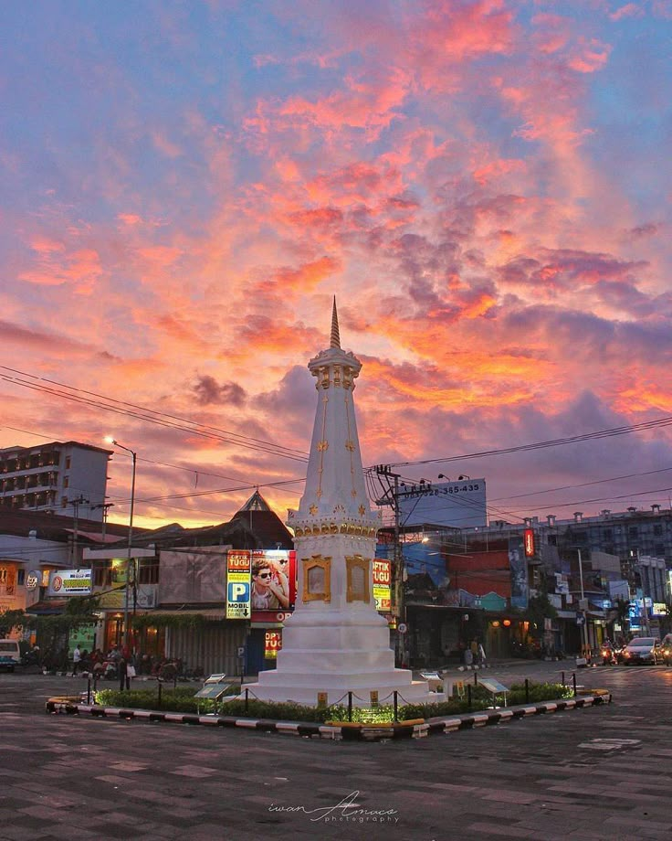

© 2026 ExploreJogja. All Rights Reserved.

Temukan berbagai tempat wisata menarik di Yogyakarta.
Candi Borobudur adalah candi Buddha terbesar di dunia yang dibangun pada abad ke-8 di Magelang, Jawa Tengah, dengan 2.672 panel relief dan 504 stupa Buddha, serta menjadi tempat wisata dan ziarah yang terkenal hingga ke seluruh dunia.
Candi Prambanan adalah kompleks candi Hindu terbesar di Indonesia yang dibangun pada abad ke-9 di perbatasan Yogyakarta dan Jawa Tengah, terkenal dengan tiga candi utama untuk Dewa Brahma, Wisnu, dan Siwa, serta keindahan arsitektur dan relief Ramayana-nya.
Jalan Malioboro adalah pusat perbelanjaan dan wisata terkenal di Yogyakarta yang dipenuhi toko batik, oleh-oleh, kuliner kaki lima, dan seniman jalanan, serta menjadi tempat favorit wisatawan untuk jalan santai dan menikmati suasana khas Jogja.
Wisata dengan pemandangan alam dari ketinggian dan berbagai spot foto yang menarik.
Keraton Yogyakarta adalah istana Kesultanan Yogyakarta yang dibangun tahun 1755 dan menjadi pusat budaya Jawa dengan bangunan bersejarah, museum, dan pertunjukan seni tradisional.
Bekas taman kerajaan Keraton Yogyakarta yang memiliki arsitektur unik dan nilai sejarah.
Isi formulir untuk melakukan pemesanan tiket wisata.